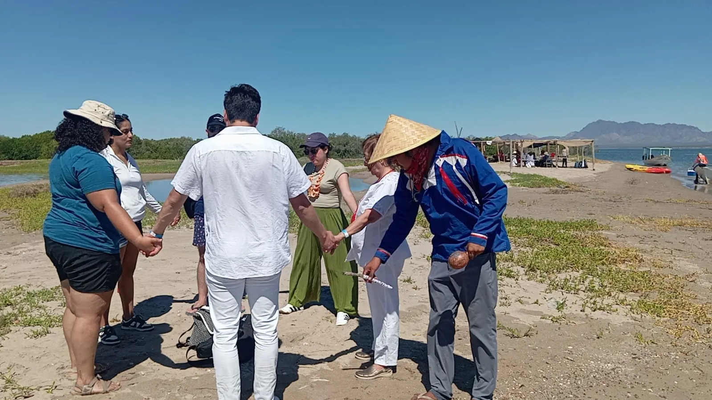
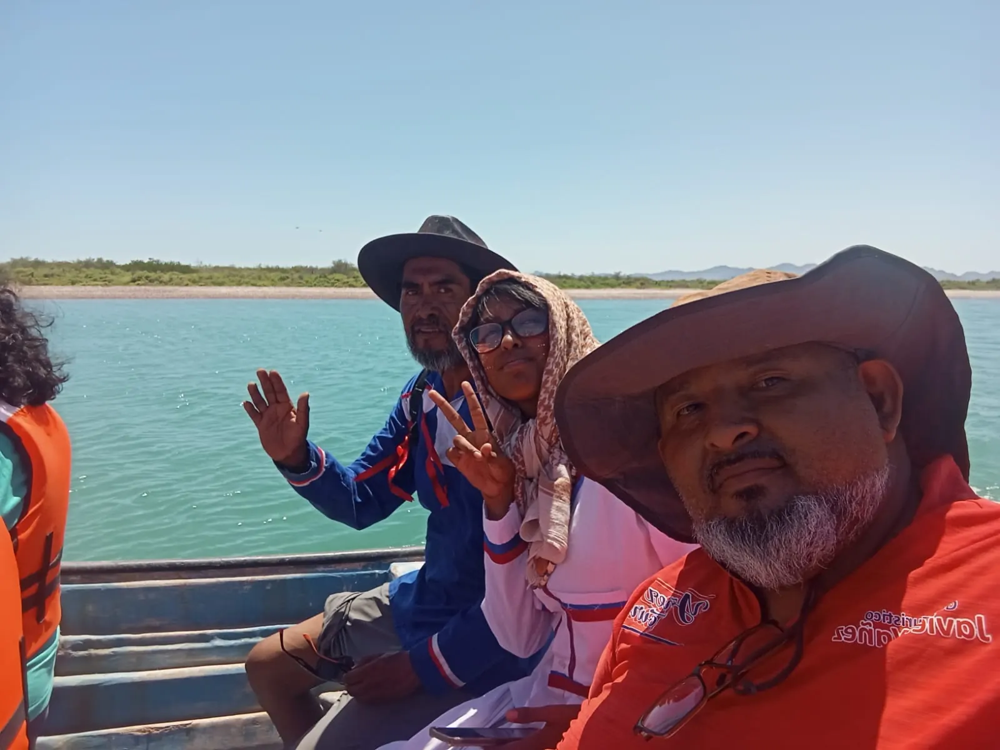

Manglares a bordo de la panga
Si la marea lo permite, entramos en la panga para recorrer los manglares. Si no, los exploras a pie.
YAÑEZ TOUR'S
0%
Preparando tu travesía
Tour a la Isla del Tiburón
Un viaje desde Bahía de Kino, en camioneta y panga, por manglares, litoral y la cultura viva del pueblo Comcaac.
Descubre la belleza natural de la Isla del Tiburón y vive una aventura entre el desierto, el mar y la cultura del pueblo Comcaac (Seri).
Cada parada está pensada para que conozcas la isla de cerca, con anfitriones locales.
Si la marea lo permite, entramos en la panga para recorrer los manglares. Si no, los exploras a pie.

Visita su territorio y conoce la cultura y tradiciones de una comunidad que sigue viva.
Paradas para fotografiar el lugar donde el desierto se encuentra con el mar.
Pelícanos, aves marinas y, con suerte, lobos marinos.
Conoce a las artesanas y pintoras faciales de la comunidad.
Consultar disponibilidadEl recorrido comienza en Bahía de Kino. Desde ahí nos trasladamos en camioneta a la comunidad de Punta Chueca, territorio del pueblo Comcaac.
Durante el trayecto hacemos paradas para tomar fotografías en paisajes donde el desierto se encuentra con el mar. Al llegar a Punta Chueca conocerás a las artesanas y pintoras faciales de la comunidad.
Desde la comunidad salimos en panga hacia la isla y visitamos la zona de manglares. Si la marea lo permite, entramos en la panga para recorrer el área. De lo contrario, desembarcamos para que la explores a pie.
Hacemos un recorrido por el litoral de la isla antes de volver a Punta Chueca y Bahía de Kino.
El tiempo puede variar según el clima y la marea.
Los Comcaac (Seri) son el pueblo originario de esta costa y de la Isla del Tiburón. Con tu visita conoces su territorio, su artesanía y su pintura facial.
Lo esencial del tour en un vistazo. Los costos se cotizan por WhatsApp según tu grupo.
3 horas
El tiempo puede variar según las condiciones del clima y la marea.
Hasta 12
personas por embarcación
Consulta disponibilidad
Experiencia opcional y sujeta a disponibilidad. Pregunta por requisitos y condiciones antes de reservar.
Quiero saber másConsulta disponibilidad
Diseños tradicionales pintados por las pintoras faciales de la comunidad.
Quiero saber másLos cupos son limitados. Escríbenos y asegura tu lugar.
Viajeros reales
Dos momentos reales del recorrido, grabados por nuestros viajeros.

Resolvemos cualquier duda y te ayudamos a vivir esta experiencia, desde tu reserva hasta el regreso a Bahía de Kino.
Antes de zarpar
Aproximadamente 3 horas. El tiempo puede variar según las condiciones del clima y la marea.
Desde Bahía de Kino, Sonora. De ahí nos trasladamos en camioneta a la comunidad de Punta Chueca, territorio del pueblo Comcaac, y desde la comunidad salimos en panga a la Isla del Tiburón y los manglares.
Hasta 12 personas por embarcación.
Si la marea lo permite, entramos en la panga para recorrer el área. De lo contrario, desembarcamos para que puedas explorarla a pie.
Escríbenos por WhatsApp al 662 103 8511 con el número de personas y la fecha que prefieren, y te compartimos la cotización.
Sí, te lo recomendamos. Los cupos son limitados y así aseguras tu lugar.
Ambas opciones están sujetas a disponibilidad. Consúltanos por WhatsApp antes de tu visita y te confirmamos.
Hemos recibido a familias con niños. Cuéntanos las edades de tu grupo por WhatsApp y te orientamos.
Cuéntanos cuántos son y cuándo quieren ir. Abrimos WhatsApp con tu mensaje listo para enviar.